Aligning inline images with the vertical-align property
I recently received the following question:
How do you vertically position a small image inside a paragraph of text?
Answer
Let's start with an example - a paragraph that contains a single line of text and a small image (shown as the small blue box below).
Next, we need to look at the 6 primary lines that can be used for vertical alignment.
Text lines
1. top line - the top line above all content

2. text-top line - top of the text including all accent marks
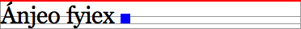
Note: The top line and "text-top" line look like they are identical. However, there are times when the top line (shown in red below) is taller that the content inside - and therefore taller than the text-top line (shown in green below). An example of this is a tall image within the line of text:
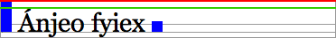
3. middle line - the vertical middle of the x-height (the height of a letter x)
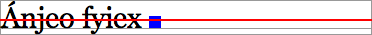
4. baseline - an imaginary line on which all letters sit
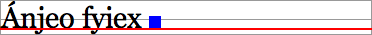
5. text-bottom line - the bottom of all text including descenders (letters such as "j", "y", "g" etc)

6. bottom line - the bottom line below all content
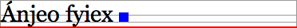
Default image vertical alignment
By default, the bottom of the image will align with the baseline of the paragraph - unless the image has margin-bottom applied. Then, the bottom of the image's margin-bottom will align with the paragraph's baseline. In the example below, the image has been given "margin-bottom: 5px" which causes the the bottom of the image to sit 5px above the baseline.
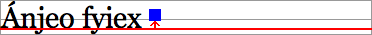
Using CSS to change vertical alignment
You can change the vertical position of images in relation to the surrounding text using the CSS vertical-align property.
The various properties that can be used include: top, text-top, middle, baseline, text-bottom, bottom, sub, super, percentage and length.
The top value
The top of the image will align with the top line.
img.class-name {
vertical-align: top;
}
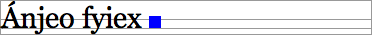
The text-top value
This will align the top of the image with the text-top line.
img.class-name {
vertical-align: text-top;
}
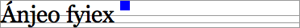
The middle value
This will align the vertical midpoint of the image with the baseline of the paragraph plus half the x-height of the paragraph.
img.class-name {
vertical-align: middle;
}
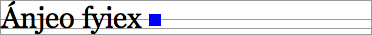
The baseline value
Although images will be vertically aligned using baseline as the default behaviour, you can also specify this using CSS.
img.class-name {
vertical-align: baseline;
}
The text-bottom value
This will align the bottom of the image with the text-bottom line.
img.class-name {
vertical-align: text-bottom;
}
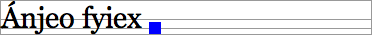
The bottom value
The bottom of the image will align with the bottom line.
img.class-name {
vertical-align: bottom;
}
The sub value
This will align the bottom of the image with the baseline position of subscript content (regardless of whether any subscript content is present).
img.class-name {
vertical-align: sub;
}
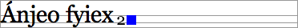
The super value
This will align the bottom of the image with the baseline position of superscript content (regardless of whether any superscript content is present).
img.class-name {
vertical-align: super;
}
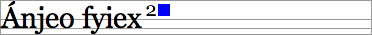
Using a percentage value
This will raise (positive value) or lower (negative value) the image from the baseline by the specified value. The value 0% means the same as baseline. Browsers vary slightly in the way that they position percentage-based vertical alignment.
img.class-name {
vertical-align: 30%;
}
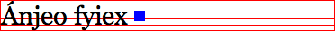
img.class-name {
vertical-align: -30%;
}
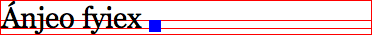
Using a length value
This will raise (positive value) or lower (negative value) the image from the baseline by the specified value. The value 0px means the same as baseline.
img.class-name {
vertical-align: 2px;
}
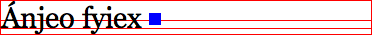
img.class-name {
vertical-align: -2px;
}
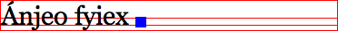
So, what about you... Do you find vertical-align useful? Do you use it to align images within content?